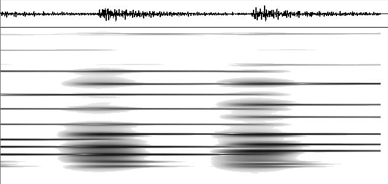

"DSP es donde la matemática de las señales se vuelve código que limpia tu llamada, reconoce tu voz y alimenta a la IA." — la disciplina invisible que está en todo
Si E06 fue la teoría (qué es una señal, Fourier, Nyquist), E07 es la práctica en software: cómo PROCESAR señales digitales con algoritmos. La FFT, los filtros digitales y la convolución son las herramientas que alimentan al audio, las comunicaciones y al Deep Learning.
🔗El puente directo a la IA: el DSP es el preprocesamiento que ocurre ANTES de que los datos lleguen a un modelo. Antes de que M42 Visión clasifique una imagen o M40 Deep Learning reconozca tu voz, el DSP limpia, normaliza y transforma la señal. Sin DSP, la IA recibiría ruido.
1. ¿Qué es DSP?
DSP (Digital Signal Processing) es procesar señales ya digitalizadas (muestreadas por el ADC de E03) con algoritmos: filtrar ruido, detectar patrones, comprimir, transformar. Vive en CPUs, chips DSP dedicados, y en tu MCU.
2. La FFT — Fourier en código
La FFT (Fast Fourier Transform) es el algoritmo que calcula la Transformada de Fourier de E06 de forma rápida: pasa una señal del tiempo a la frecuencia en O(n log n) en vez de O(n²).
import numpy as np
# Señal: 440 Hz (La) + 880 Hz, muestreada a 8000 Hz
fs = 8000
t = np.linspace(0, 1, fs)
senal = np.sin(2*np.pi*440*t) + 0.5*np.sin(2*np.pi*880*t)
# FFT — pasar al dominio frecuencia
espectro = np.abs(np.fft.rfft(senal))
frecuencias = np.fft.rfftfreq(len(senal), 1/fs)
# Picos en 440 y 880 Hz → la FFT "encontró" las notas
pico = frecuencias[np.argmax(espectro)]
print(f"Frecuencia dominante: {pico:.0f} Hz") # ~440
🔗Por qué O(n log n) cambió el mundo (M12): la FFT (Cooley-Tukey, 1965) bajó el costo de O(n²) a O(n log n). Para n=1 millón de muestras, eso es la diferencia entre 10¹² y 2×10⁷ operaciones — de imposible a instantáneo. El análisis de complejidad de M12 explica por qué este algoritmo, y no otro, hizo posible el audio digital, el JPEG y el WiFi.

Espectrograma de un acorde: la FFT aplicada a lo largo del tiempo. El eje vertical es frecuencia, el horizontal es tiempo, el color es intensidad. Las líneas horizontales son las notas del acorde (la "analogía del piano" de E06, hecha imagen). Foto: Poolpeggy, vía Wikimedia Commons (CC BY-SA 3.0).
3. Filtros digitales
Un filtro digital procesa la señal muestra por muestra para dejar pasar o atenuar ciertas frecuencias (los filtros de E06, ahora en código). Dos familias:
Tipo
Cómo
Trade-off
FIR (Finite Impulse Response)
Promedio ponderado de N muestras pasadas
Estable, fase lineal, pero más cómputo
IIR (Infinite Impulse Response)
Usa también salidas pasadas (feedback)
Eficiente, pero puede ser inestable
# Filtro FIR pasa-bajos simple: promedio de las últimas 5 muestras
def filtro_fir(senal, N=5):
salida = []
for i in range(len(senal)):
ventana = senal[max(0, i-N+1):i+1]
salida.append(sum(ventana) / len(ventana))
return salida
# Atenúa cambios bruscos (alta frecuencia = ruido), deja la tendencia
🔗 El filtro de media móvil de E05/E06 es el FIR más simple (todos los pesos iguales). Acá lo generalizás: eligiendo los pesos, diseñás QUÉ frecuencias atenuar. Es el mismo salto que de "promedio simple" a "promedio ponderado" en estadística (M04).
4. Convolución — la operación universal
La convolución desliza un "kernel" (ventana de pesos) sobre la señal, multiplicando y sumando. Es CÓMO se aplica un filtro FIR, y la operación central del procesamiento de señales e imágenes.
señal: [1, 2, 3, 4, 5]
kernel: [0.5, 0.5] (promedio de a 2)
conv: [1.5, 2.5, 3.5, 4.5] ← cada salida = combinación local
🔗Esta ES la operación de las CNN: cuando una red convolucional de M42 Visión detecta bordes, desliza un kernel 3×3 sobre la imagen — convolución 2D. La diferencia con DSP clásico: en DSP vos DISEÑÁS el kernel; en Deep Learning la red APRENDE el kernel óptimo. Misma operación, kernel fijo vs aprendido. Este es el bucle más profundo del campus.
Procesar la señal EN el dispositivo (no en la nube) se llama edge DSP. Ahorra ancho de banda, latencia y privacidad. Los MCU modernos (ESP32, ARM Cortex-M con DSP) corren FFT y filtros en tiempo real.
🔗TinyML = DSP + IA en el chip: "detección de palabra clave" ("Hey Siri") corre en el dispositivo: el micrófono (E05) → ADC (E03) → FFT/MFCC (E07) → modelo TinyML (M40) → todo en µW. Es la convergencia total: hardware + señales + IA en un chip que cabe en un reloj. El capstone de la complementariedad.
7. Práctica
Python + numpy/scipy.signal: cargá un WAV, sacá su FFT, aplicá un filtro, escuchá la diferencia.
Armá una señal en el tiempo (arriba) y mirá cómo la FFT revela las frecuencias que la componen (abajo). Subí los tonos o probá los presets: una onda cuadrada "esconde" infinitos armónicos impares.
⏱ Dominio del TIEMPO (la señal cruda)
📊 Dominio de la FRECUENCIA (espectro = qué frecuencias hay)
Tono 1 1.0
Tono 2 0.0
Tono 3 0.0
La FFT "desarma" cualquier señal en sus frecuencias puras. Un seno = 1 pico. Una cuadrada = picos en los armónicos impares que decrecen como 1/n.
✅ Checkpoint
1. ¿Qué hace la FFT y por qué importa su complejidad?
Calcula la Transformada de Fourier (tiempo → frecuencia) en O(n log n) en vez de O(n²). Esa mejora (M12) hizo viable el audio digital, JPEG y WiFi — para n grande, la diferencia es entre imposible e instantáneo.
2. ¿Diferencia entre filtro FIR e IIR?
FIR usa solo muestras de entrada pasadas (estable, fase lineal, más cómputo). IIR usa también salidas pasadas vía feedback (eficiente pero puede ser inestable). FIR es más seguro para empezar.
3. ¿Qué es la convolución y cómo conecta con Deep Learning?
Deslizar un kernel de pesos sobre la señal, multiplicando y sumando. Es la operación central del DSP y de las CNN (M42). Diferencia: en DSP vos diseñás el kernel; en Deep Learning la red lo aprende. Misma operación.
4. ¿Qué es edge DSP / TinyML?
Procesar señales y correr modelos ML en el propio dispositivo (no la nube). Ahorra latencia, ancho de banda y privacidad. Ejemplo: "Hey Siri" = micrófono → ADC → FFT → modelo TinyML, todo en el chip a µW.
5. ¿Por qué hay que aplicar una ventana antes de la FFT?
Porque los bordes abruptos de un segmento finito generan "spectral leakage" (frecuencias falsas). Una ventana (Hann, Hamming) suaviza los bordes y da un espectro limpio.
6. ¿Cómo se relaciona el DSP con la IA del campus?
El DSP es el preprocesamiento ANTES del modelo: limpia, normaliza y transforma la señal (FFT, filtros, MFCC). M42 Visión y M40 Deep Learning reciben datos ya procesados por DSP. Sin DSP, la IA recibiría ruido crudo.
🧠 Autoevaluación rápida
Respondé sin mirar arriba. Cada pregunta te explica el porqué.
1. ¿Por qué la FFT cambió el mundo?
Cooley-Tukey, 1965. Para n = 1 millón de muestras es la diferencia entre ~10¹² y ~2×10⁷ operaciones: de imposible a instantáneo. Sin eso no habría audio digital, JPEG ni WiFi.
2. ¿Cuál es la diferencia entre un filtro FIR y uno IIR?
Los dos son digitales. El feedback del IIR lo hace barato en cómputo pero puede explotar; por eso para empezar conviene FIR — y el promedio móvil de E05/E06 es el FIR más simple.
3. La convolución consiste en…
Es CÓMO se aplica un filtro FIR — y la misma operación de las CNN de M42: en DSP vos diseñás el kernel, en Deep Learning la red lo aprende.